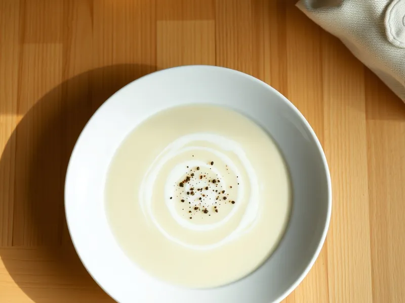

Крем-суп из цветной капусты со сливками
Бархатный суп-пюре из цветной капусты с картошкой и сливками за 25 минут
25 мин4 порц.220 ккал на порциюБ 7 · Ж 13 · У 20Европейская кухня
Открыть в приложении: порции, таймеры, список покупок
Продукты на 4 порц.
- Цветная капуста600 г
- Картофель2 шт
- Лук репчатый1 шт
- Бульонный кубик1 шт
- Вода800 мл
- Сливки 20%150 мл
- Сливочное масло20 г
- Сольпо вкусу
- Перец чёрный молотый1 щеп.
- Мускатный орех по желанию1 щеп.
Как готовить
- Разберите капусту на соцветия, картофель нарежьте кубиками, лук крупно, 5 минут.
- Вскипятите 800 мл воды, растворите бульонный кубик. Положите овощи и варите на среднем огне 15 минут, пока капуста и картофель легко не протыкаются ножом.
- Снимите кастрюлю с огня и пробейте суп погружным блендером до гладкого пюре, 2 минуты.
- Влейте сливки, добавьте сливочное масло и мускатный орех, прогрейте на слабом огне 2 минуты, не доводя до кипения.
- Попробуйте, при необходимости посолите и поперчите. Если суп слишком густой, разбавьте горячей водой.
Совет. Не переваривайте капусту дольше 15 минут: у пюре появится резкий капустный запах. Сверху хорошо посыпать тёртым сыром или гренками.